<div class="textcontainer">
<p class="margin"> </p>
<h3>Week 7: Electronic Outputs & MVP!</h3>
<h4>Minimum Viable Product for Final Project</h4>
<p>Another extremely long week where you really wouldn't know it from looking at the final result! (Update from Sunday 3/29: 25 total hours and actually I am very pleased with the results!! See bottom for improvements.)
For my MVP, I focused on making the rudder and stab move according to a thermal sensor. The two components that I decided to delay are the fuselage and the wind sensor.
For the sake of time, I could not implement the wind sensor because I had to calibrate and it was new so I would need to learn how to use it.
As for the fuselage, I am waiting for when I do my CNC project next week to see what that would actually entail. That includes seeing just how compact I can make the servos and wiring in my project.
That being said, the MVP worked out well! It mostly moves how I want it to, works as a simulator (which is my entire goal), and detects thermals (which is more important that wind).</p>
<h5>Stabilizer and Rudder</h5>
<p>From my designs from last week, I laser cut wood to create the stabilizer and rudder components. I connected them to the elevator and horizontal stab using hinges.
My stab is connected such that both sides move together when one is moved.</p>
<p> <p>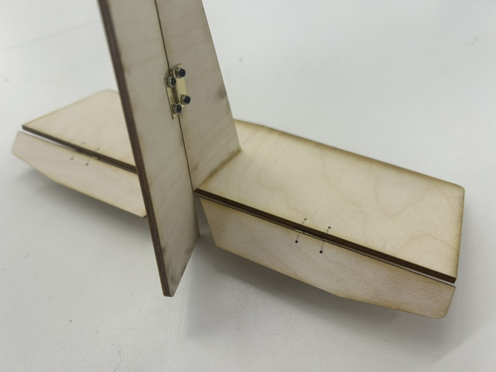</p> </p>
<p> <a href="ho_stab_connected.dxf" download = "stab.dxf">Download Stab DXF</a></p>
<p> <a href="vert_stabs.dxf" download = "rudder.dxf">Download Rudder DXF</a></p>
<h5>Box (in place of the fuselage)</h5>
<p>For the fuselage, I created a simple box using laser-cut wood to hold the electronic components.
It has two layers to allow for better placement of the two servos.
It is also used to store the breadboard (which I elevated to allow the thermistor to peak through the box cap).
The top to the box has a hole where the thermistor peaks through. This top is also how the plane parts attach to the box (so they don't move).
The photos below show the box parts as well as the general idea of where things will go inside.</p>
<p> <p>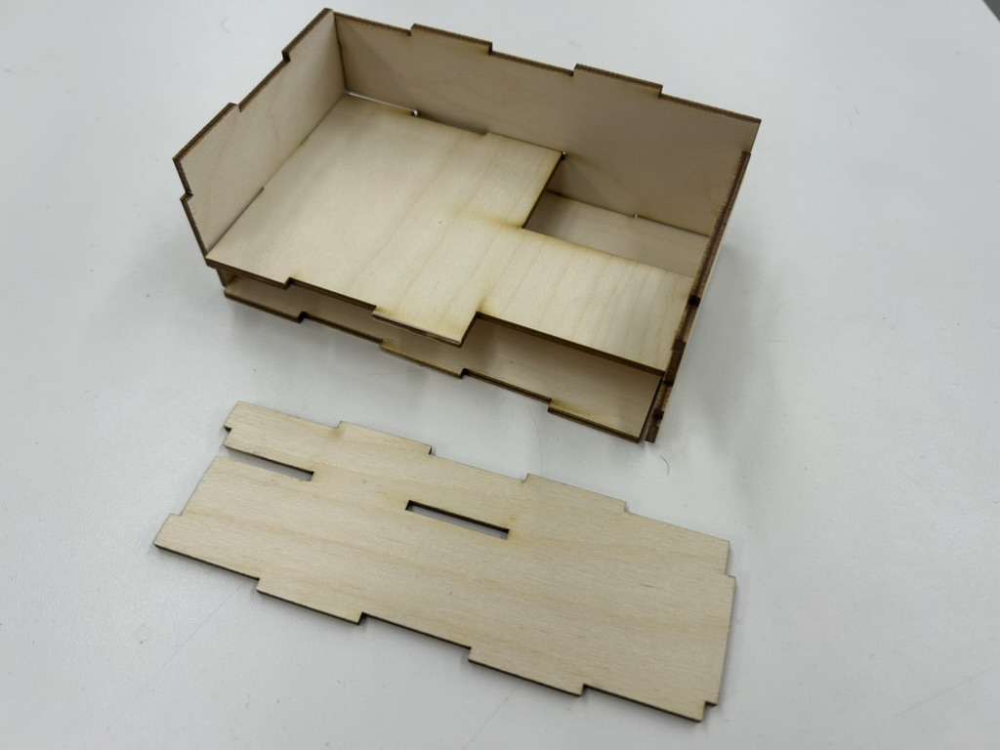</p>
<p>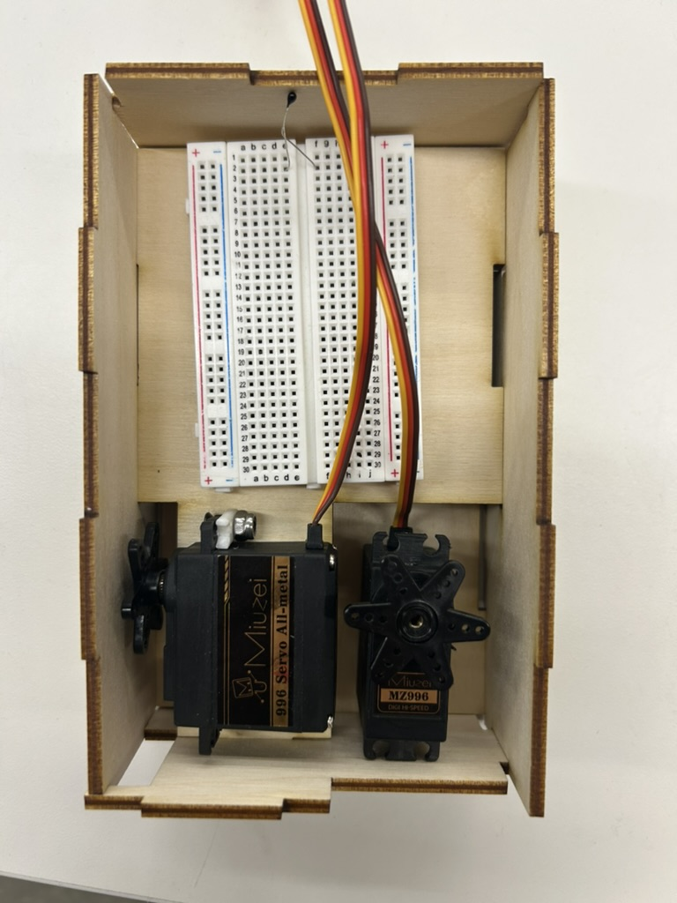</p> </p>
<p> <a href="box_parts.zip" download = "box.dxf">Download Box DXF files</a></p>
<br>
<h5>Servos</h5>
<p> I used two servos, one for the rudder and one for the stab. As a servo rotates, it also rotates the connected component along a parallel axis.
I had to attach them at an offset. My first attempt was with a brass wire but it was tricky to get it to tightly wrap around the servo cap. And it had to be compact in order to fit neatly in the box.
It also shouldn't slide through the servo cap since I wanted a stiff connector.
So I designed and 3D printed attachments both to the servo heads and the plane parts that would allow a stiff wooden rod to go through and connect the two.
They also have little holes to allow for easier drilling into the plane parts and the wood rod.
</p>
<p><p>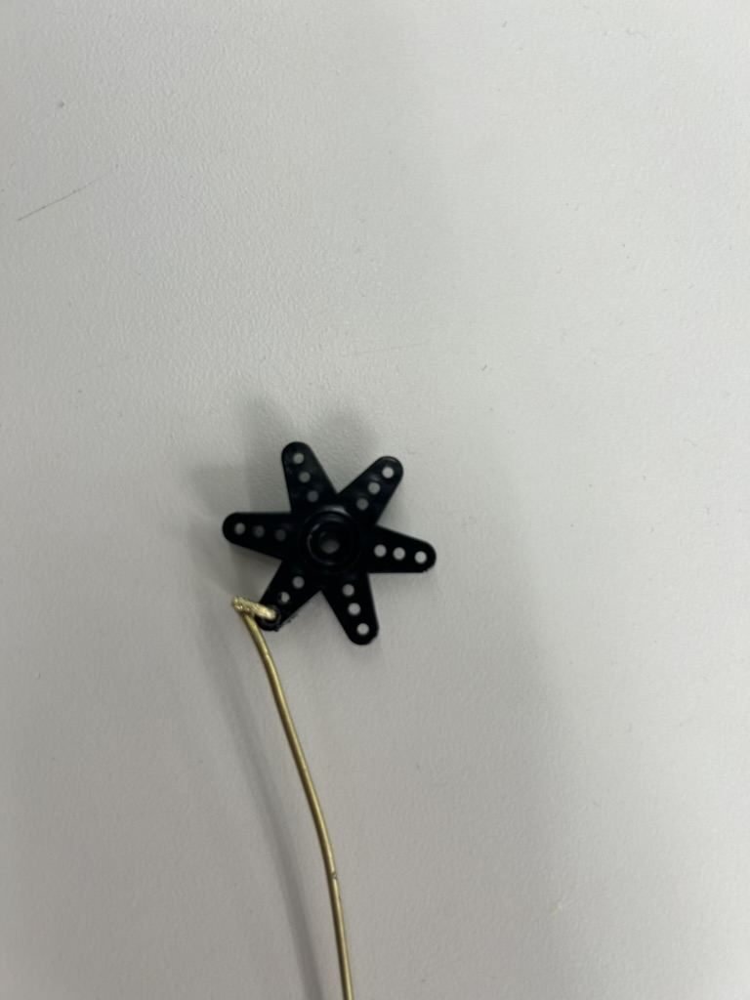</p> </p>
<p> <p>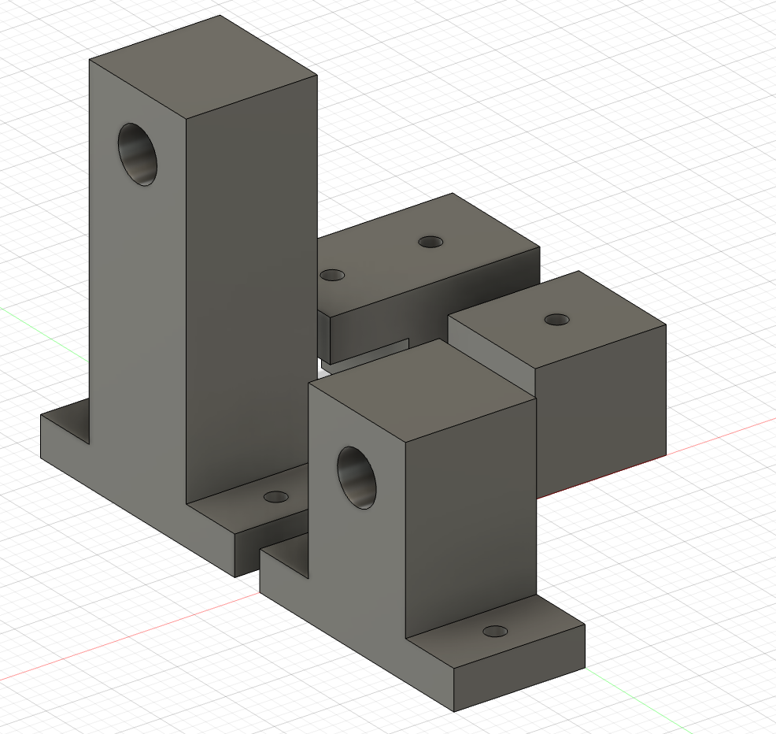</p>
<p>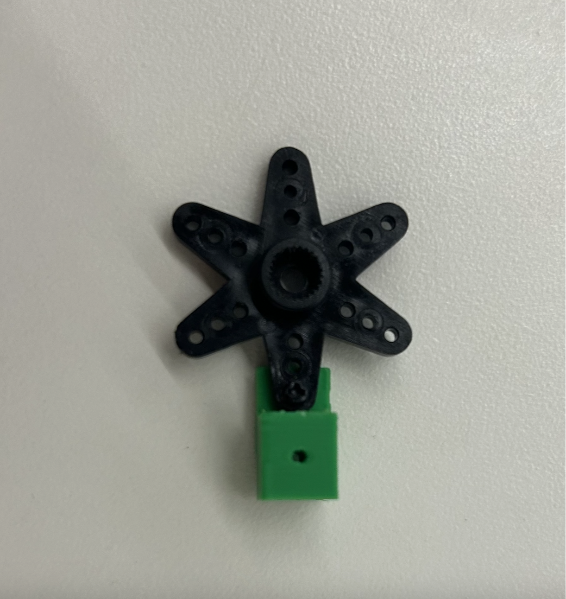</p>
<p>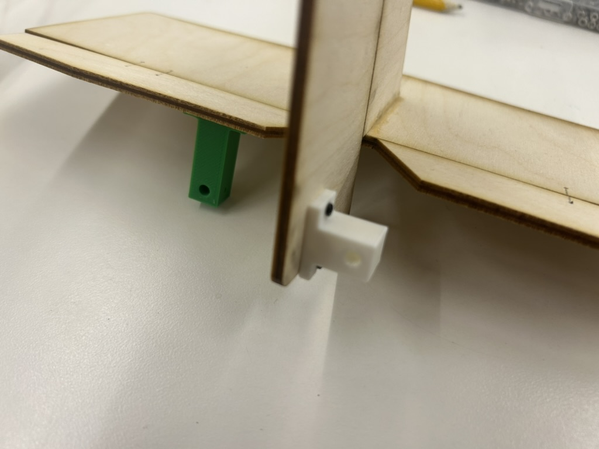</p> </p>
<p> <a href="servo attachment pieces.zip" download = "servo_attachments.zip">Download Servo Attachment GCode and 3mf Files</a></p>
<p>When I went to attach the servo to my microcontroller and test that my code didn't magically stop working since I last checked,
I was surprised (but not really) to see that something was wrong! The servo I was now using required more current than the small ones from my testing last week.
So I used a separate power source (plug into the wall) to power the two servos. I connected the ground to the same as the thermistor but the power source was different.
I also cut new wires to attach the breadboard so that it would all be very compact.
</p>
<p><p>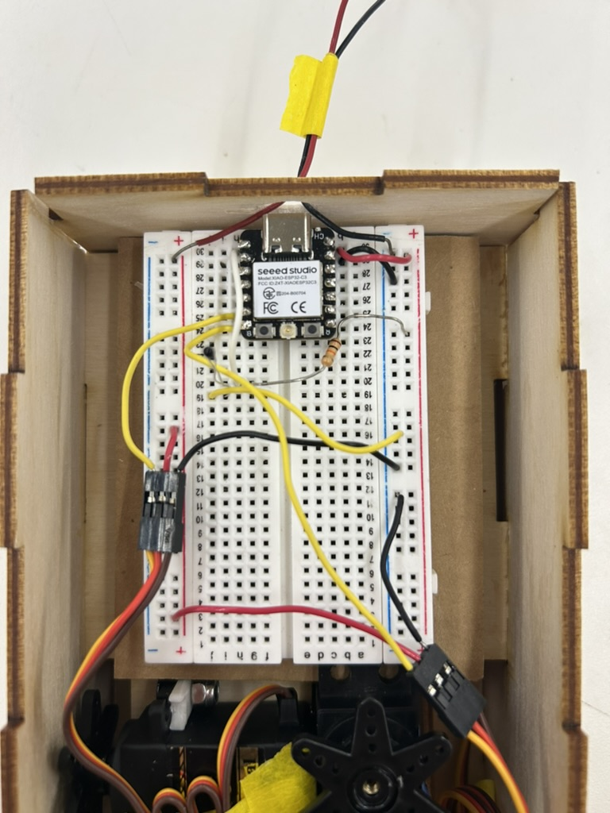</p> </p>
<p>Since these were new servos, I had to calibrate them to see how the number in <code>servo.write()</code> corresponds to actual degree of rotation. That was easy, I just set it to certain degrees that I know I would be using and then measured it.</p>
<p> <p>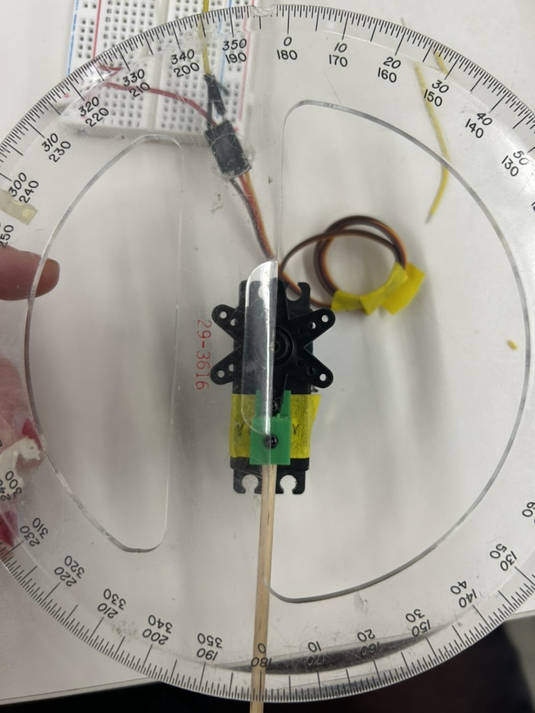</p>
<p>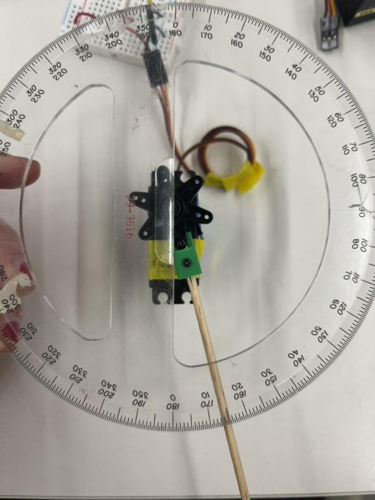</p>
</p>
<p> Since the servos will be attached to the plane parts and have to be perfectly parallel, straight, etc, I had to make sure the servos wouldn't move.
So I used wood glue to attach some scrap wood parts around both servos to keep them from moving.</p>
<p> <p>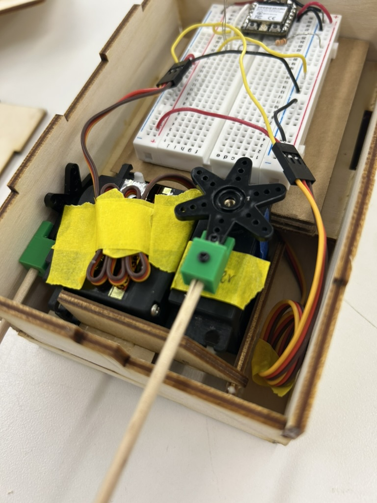</p> </p>
<br>
<p>I didn't forget about the oscilloscope! I connected it to one of my servos, which even staying at one position, was always receiving a signal to stay in that position. Not always actually, but every 20ms!
Using the trigger tool to show the signals, and setting two points A & B to measure the delta between them, I saw that the signals were 20ms apart. That's 50 times per second, or 50Hz, which is what the oscilloscope calculated, too.
</p>
<p> <p>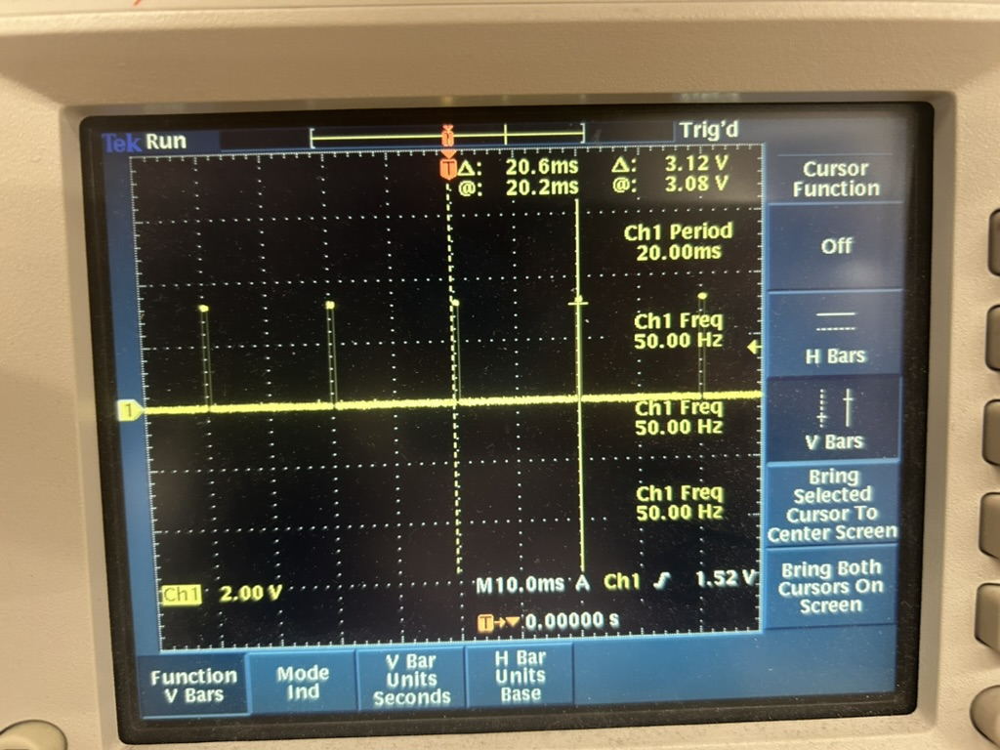</p> </p>
<br>
<h5>Code</h5>
<p>My code was essentially the same as from last week, except I added a <code>ServoWrapper</code> class to account for the multiple servos I was using.
I only needed it to hold pin position, an attach function, and a write function, so it was a simple adjustment.
</p>
<pre><code>class ServoWrapper {
public:
Servo motor;
int pin;
ServoWrapper(int pin_input){
pin = pin_input;
}
void attach(){
motor.attach(pin);
}
void write(int angle){
motor.write(angle);
}
};
</code></pre>
<h5>Putting it all together and first result (3/25)...</h5>
<p>Every detail took so long! But finally, I was able to put the top of the box on, the plane part on, and screw the plane parts to the attachers.
That step would make it a lot harder to dissasemble later.
Even though I triple checked that the servos worked before I screwed everything together, of course, I was a fool to believe that would be the end of that.
I screwed it on, and some of the breadboard wires came loose and I had to unscrew stuff and put it together, and anyways, I went back to adjust my wiring to be a lot sturdier.
</p>
<p>But wait! There's more! While the MVP did end up working, and the rudder and stab moved with the servo, the wood must have been too heavy or too stiff or something, but they did not move the same degrees as I originally set on the servos.
As in, if I set the servo to move 15 degrees, the stab moved only a fraction of that. Even increasing the degrees didn't dramaticize the movement. So, while I can see that they move and it's all in accordance to an input,
I will have to reconsider the material I use for the plane parts as well as potentially my servo connectors. If those are loose such that the heavy wood makes them not keep their angle on the servo, that could also be the issue.
I couldn't tell with everything screwed together, and when the servos didn't have the plane parts attached to them (just the wood rods), they moved perfectly.
</p>
<p> Anywho, here are the photos and videos AS OF WEDNESDAY (3/25)! The first video is when it detects a thermal (rudder moves to the right, stab moves down) and the second is when it escapes the thermal and goes back to it's original positioning (rudder moves back to center and stab moves up).</p>
<p> <p>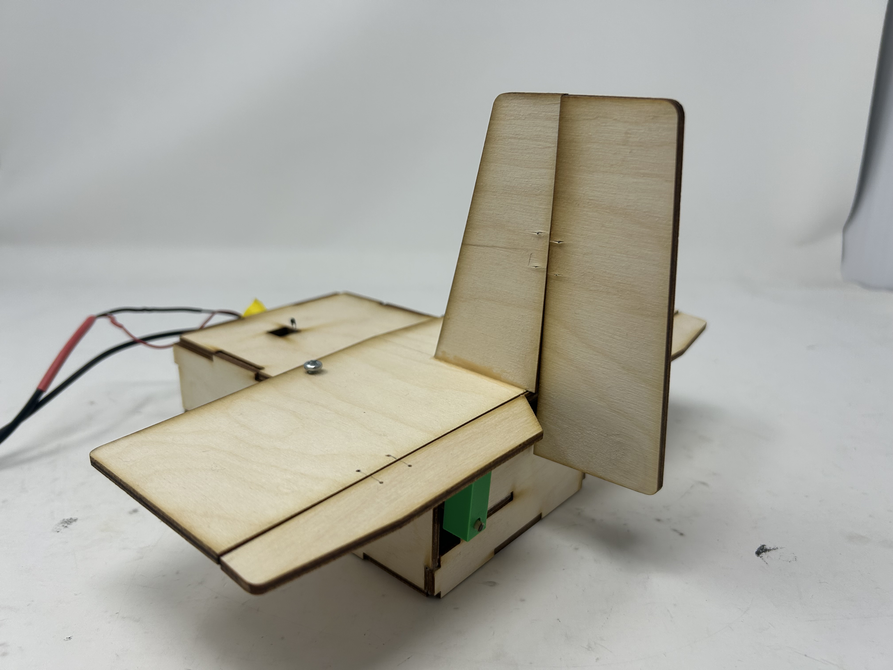</p> </p>
<video width="450" height="300" controls>
<source src="thermal_detected.mov" type="video/mp4">
</video>
<video width="450" height="300" controls>
<source src="escaped_thermal.mov" type="video/mp4">
</video>
<br> </br>
<h5>...Improvements!! Final Result!</h5>
<p>This wasn't working that great, obviously, so I went back and changed the strategy.
The main change was the wooden rod. I decided to ditch that and instead use a strong string and springs.
I removed the servo attachers and connected the string directly to the servo cap. All the movement would come from pulling motions:
Servo pulls the string to a thermal position and spring pulls the plane part back to no thermal position.
Surprisingly, that was mostly straightforward. Small additions: I added a wooden rod right on top of the rudder stab (by making it exactly the size of the inside of the box and shoving it down!) because it would sometimes tilt with the spring force.
Additionally, the top of the box connected to the rest of the box with a rubber band.
Below are the photos of the final plane, and a video of it detecting a thermal (first move from the heat of my finger) and escaping the thermal (second move).</p>
<p> <p>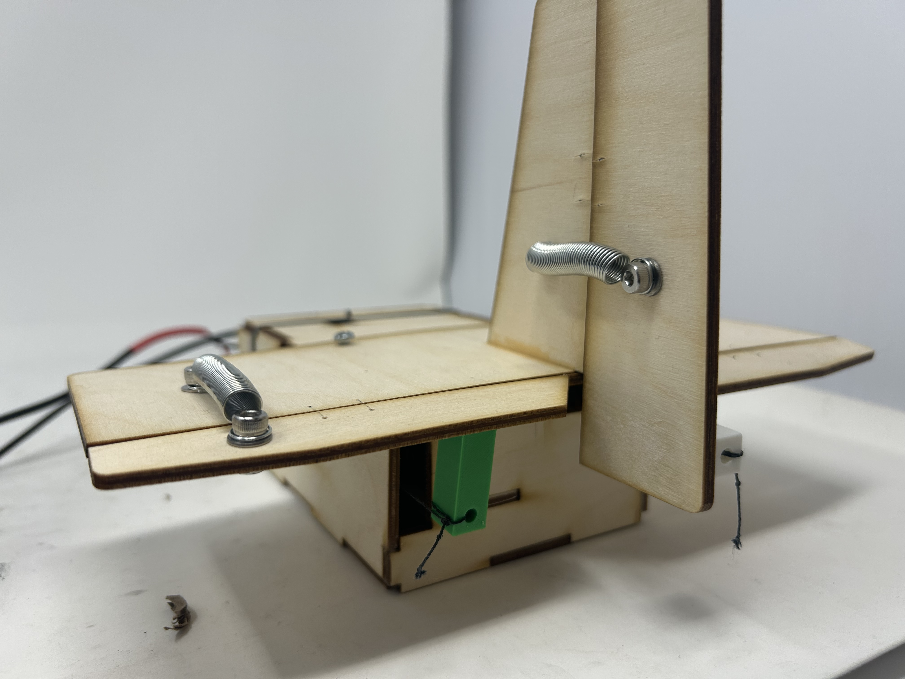</p>
<video width="500" height="350" controls>
<source src="finalvideo.mov" type="video/mp4">
</video>
</div>